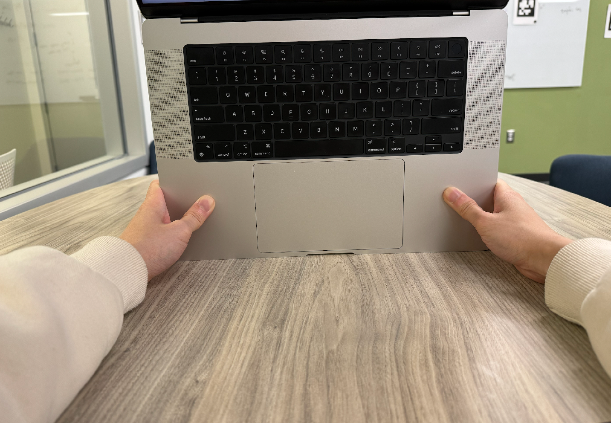
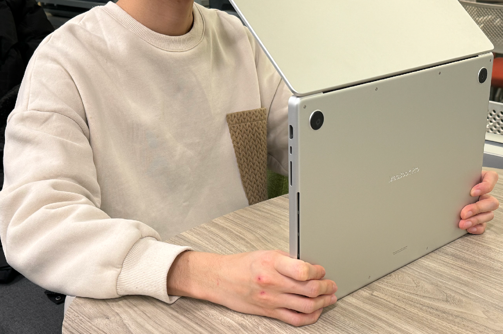

The goal of this lab is to implement code in Jupyter Notebook to detect human gestures and monitor breathing via sound signals. We have provided you with all of the code to show the processed outcome (eg spectrograms, plots etc.), but you will need to implement some parts of the FMCW code to enable the sensing.
The human gestures part of this lab is based on an MIT 6.808 project in Spring 2021 by Cooper Jones, Willie Zhu and Jan Wojcik.
Start by downloading the Jupyter notebook for this lab.
Known problem: Do not use Google Colab to run the .ipynb. The PortAudio library cannot be used in Colab.
Start by downloading the Anaconda software. After installing, open the Anaconda Navigator and click on launch for Jupyter Notebook. It should open in Chrome.
In the browser, change directory to the folder where the provided notebook locates, and then click on the notebook. It should open a new tab. You can see the notebook and the code.
For those unfamiliar with .ipynb, the order in which you run the cells matter, so be aware when going back through different parts of this notebook (as in section 2)
Read this link before you begin lab2. Also, review lec4 slides if needed. Make sure you understand the following questions
The goal of this section is to successfully obtain spectrograms from the recorded FMCW signals. In the next section you will extract gestures using these spectrograms.
The basic sequence is as follows:
Before you can start transmitting and receiving FMCW chirp signals, you need to know how to transmit a single frequency, what it sounds like, what it looks like in the time and frequency domains, and what its spectrogram looks like.
To do this you will need to implement the “play_and_record” function. Given a frequency, sampling rate, and duration as input, this function should play the corresponding sound (using the speaker) and record it (using the microphone); it should also return the recorded sound.
You should write code to do the following:
Once you have successfully implemented this function, execute the code that comes after the function definition. You should hear a loud 10kHz tone for 2 seconds. When you run the following code blocks, you should be able to see what the signal looks like in time and frequency and what the spectrogram of the signal looks like.
Known issue for Mac Laptops: When running the “sd.playrec()” command, Google Chrome might ask for permission to get access to the microphone, please give access when you get this message otherwise, this command will only play the sound but it will not record it. If you didn't give access then you will need to go to microphone settings in Mac and there you can give microphone access to Chrome.
Once everything is working fine, you should run subsequent blocks to see the received signal in the time domain, frequency domain, and the spectrogram.
In this task, you will transmit and record a FMCW chirp signal. To do this you will need to implement the "play_and_record_chirp" function. Specifically you need to do the following:
Note: If the microphone is not able to record a good signal, try increasing the amplitude of your transmitted signal (tx) by scaling the entire signal by a constant factor i.e. 500 or 100
After you have successfully implemented this function, run the subsequent block. You should hear a periodic sweep from your speakers.
Subsequent code blocks do the following:
Notice that the spectrograms look relatively similar. In this section, we will see how performing background subtraction allows us to track movements in the environment.
background_subtractIn this task you will perform background subtraction from the received FMCW chirp signals. To do this you need to implement the background_subtract function that takes in a series of mixed chirp segment FFTs (i.e. all_multiplied_ffts) as input. Specifically you need to do the following:
Subsequent code blocks do the following:
idx_to_distanceIn this task you will estimate the distance using the peak location. To do this you need to implement the “idx_to_distance” function which takes the peak location as input. Specifically you need to do the following:
𝑑𝑖𝑠𝑡𝑎𝑛𝑐𝑒=(Δ𝑓 / 𝑠𝑙𝑜𝑝𝑒.𝑣)/2
where "v" is the speed of sound in air, "slope" is the slope of your FM W chirp (Hz/s) and " Δ𝑓 " corresponds to the peak location.
Hint: The index of the peak is not equal to Δ𝑓 because it is not in Hz, how can you convert it to Hz?
Once you have successfully implemented this function, and if you run the next code block. It should plot the distance variation as a function of time.
In this task, you will record different hand gestures. Put you hand about 25 cm above the speaker of the Mac. While the chirp sound is playing, do the following two gestures separately:
For each case your hand movement should be aligned with the direction of the sound.
In this section, we will use the phase to track small movement. For example, we can use the phase of FMCW signal to monitor the breathing.
We first implement the missing code in the block under Task 3.1.
You will need to do background subtraction for the mixed signal, compute the amplitude (absolute
values) of the FFT result, and compute the phase of the FFT result (use np.angle()).
After that, we are ready to monitor the breathing. Before playing the sound, use your hands to hold the mac so that its speaker is directly facing your chest. Keep the mac about 40 cm away from your chest and hold it still.
 Note: Keeping the mac 40 cm away from the chest should result in range_bin=15.
If you do not see the expected breathing plot, you can change the "range_bin"
variable to nearby integers (e.g., plus minus 5) to search for the plot.
We also provide pre-recorded data for this task. If you still didn't see the expected breathing plot after trying several times, you can download them (breathing_1_rangebin=18.npz and breathing_2_rangebin=21.npz) and use the following code to load them:
# load pre-recorded data
recorded_data = np.load('breathing_1_rangebin=18.npz')
tx = recorded_data['tx']
rx = recorded_data['rx']range_bin to the one indicated in the file name (i.e., 18 for this file).
Write your answers to the following items in a single PDF file and name it lab2_${pennkey}.pdf. Zip this pdf and the .ipynb notebook and submite it in the gradescope.